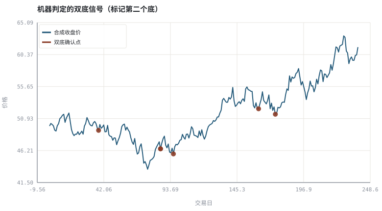
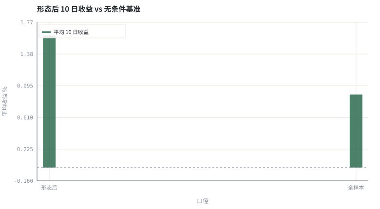

第 19 章形态识别：从主观描述到可判定规则
「双底」不是一个图形，而是一组带容差、带参数的不等式；写下它们才谈得上检验。
本章位置：第 18 章是单根 K 线的变换，本章是多根 K 线的组合规则；第 20 章 · 用代码画图：SVG 图与看图陷阱 检查这类规则是否偷看了未来数据。
形态识别是一段带超参的模式匹配；TOL、W、NECK 是它的正则项。在纯噪声上也能匹配出一堆「信号」，所以必须配一个独立的前向收益检验。
- 能把头肩、双底、三角、缺口写成可判定条件。
- 能识别形态定义里隐含的自由参数。
- 能计算形态后的前向收益并与无条件基准比较。
- 能解释「看图很准」为何常来自选择性记忆。
§知识点地图
每个知识点都配了 1～2 个扩展学习链接；本章完整资源清单见 扩展学习。
| # | 知识点 | 扩展学习 | 状态 |
|---|---|---|---|
| 1 | 头肩顶与颈线 | Chart pattern · Support and resistance | 正文已覆盖 |
| 2 | 双底与双顶 | Chart pattern · Support and resistance | 正文已覆盖 |
| 3 | 三角形与突破 | Chart pattern · Support and resistance | 正文已覆盖 |
| 4 | 缺口与回补 | Chart pattern · OHLC chart | 正文已覆盖 |
| 5 | 局部极值判定 | Chart pattern · Support and resistance | 正文已覆盖 |
| 6 | 容差与自由参数 | Chart pattern · Support and resistance | 正文已覆盖 |
| 7 | 前向收益检验 | Rate of return · Logarithmic return | 正文已覆盖 |
| 8 | 选择性记忆 | Chart pattern · Support and resistance | 正文已覆盖 |
§19.1把形态翻译成谓词
形态识别的第一步不是找图，而是写 is_double_bottom(prices, params) -> bool：存在两个局部低点 i < j，间隔在给定区间内，两底价格相差小于容差，且中间存在一个明显高于低点的高点（颈线）。
| 要素 | 自由参数 | 参数变大时 |
|---|---|---|
| 局部低点 | 左右窗口 w | 信号变少、更「显著」 |
| 两底相近 | 价格容差 ε | 信号变多、更宽松 |
| 间隔合理 | 最小/最大间隔 | 决定形态的时间尺度 |
| 中间有颈线 | 颈线高度阈值 | 决定形态是否「像」 |
| 确认突破 | 突破幅度与量能 | 更晚确认、更少假信号 |
五个参数全是人定的。只要允许事后调整，任何一段历史行情里都能找到「完美形态」——这就是第 28 章要处理的数据挖掘问题。
§19.2形态必须配一个可证伪的命题
H0: E[r_前向 | 形态出现] = E[r_前向]
只有把「形态有用」写成关于前向收益的命题，才能用样本外数据、成本扣除与显著性检验去否定它。只看图形画得多标准，不构成证据。
§Python 分析实例
实验 19-1 · 双底的机器判定与前向收益对照
#!/usr/bin/env python3
# -*- coding: utf-8 -*-
"""把双底写成不等式，自动扫描合成序列，比较形态后收益与无条件基准。
数据为合成数据或模型示意，仅用于教学，不构成投资建议。
"""
from __future__ import annotations
import math
import pathlib
import random
import statistics
import sys
sys.path.insert(0, str(pathlib.Path(__file__).resolve().parents[3] / "tools"))
from chart import Chart, candlestick, heatmap, BLUE, RED, GREEN, AMBER
FIG = pathlib.Path(__file__).resolve().parents[1] / "fig"
FIG.mkdir(exist_ok=True)
random.seed(7)
# ---- 参数区 ----
N = 240
START, DRIFT, VOL = 50.0, 0.0003, 0.014
W, TOL = 3, 0.02 # 局部极值半窗口、两底价格容差
MIN_GAP, MAX_GAP = 8, 45
NECK, FWD = 0.03, 10 # 颈线幅度、前向收益天数
# ---- 计算与作图 ----
rng = random.Random(7)
px, prices = START, []
for _ in range(N):
px *= (1 + rng.gauss(DRIFT, VOL))
prices.append(px)
lows = [i for i in range(W, N - W)
if prices[i] == min(prices[i - W:i + W + 1])]
signals, marks = [], []
for a, i in enumerate(lows):
for j in lows[a + 1:]:
gap = j - i
if not (MIN_GAP <= gap <= MAX_GAP):
break
p1, p2 = prices[i], prices[j]
if abs(p1 - p2) / p1 > TOL:
continue
peak = max(prices[i:j + 1])
if peak / min(p1, p2) - 1 < NECK:
continue
if j + FWD < N:
signals.append((j, prices[j + FWD] / prices[j] - 1))
marks.append((i, j))
break
rets = [prices[t + FWD] / prices[t] - 1 for t in range(N - FWD)]
base = statistics.fmean(rets)
hit = statistics.fmean(r for _j, r in signals) if signals else 0.0
win = statistics.fmean(1.0 if r > 0 else 0.0 for _j, r in signals) if signals else 0.0
c = Chart(FIG / "19-pattern.svg", "机器判定的双底信号（标记第二个底）", xlabel="交易日", ylabel="价格")
c.line(range(N), prices, BLUE, label="合成收盘价")
c.scatter([j for _i, j in marks], [prices[j] for _i, j in marks], RED,
label="双底确认点", radius=5)
print("形态图:", c.save())
b = Chart(FIG / "19-forward.svg", "形态后 10 日收益 vs 无条件基准", xlabel="口径", ylabel="平均收益 %",
xticks=[(0, "形态后"), (1, "全样本")])
b.bars([0, 1], [100 * hit, 100 * base], GREEN, label="平均 10 日收益")
b.hline(0.0, "#9aa6b2")
print("收益图:", b.save())
print("局部低点=%d 双底信号=%d | 形态后均值=%.3f%% 基准=%.3f%% 胜率=%.1f%%" %
(len(lows), len(signals), 100 * hit, 100 * base, 100 * win))操作：把 TOL 从 0.02 放宽到 0.08，观察信号数量与形态后收益如何变化。 预期与判读：本例的价格是纯随机游走，不含任何形态效应，所以形态后收益与基准的差异只是抽样噪声（本例恰好偏高，换一个种子就可能偏低）。但放宽容差后总能找到更多「标准双底」——这就是选择性记忆的算法版本。
改参数看趋势：把 NECK 调到 0.01，形态变松、信号变多，说明结论对参数极敏感。 文件位置：part3/19-patterns/code/19-pattern.py


代码块右上角可一键复制；仓库里的 code/*.py 由 tools/extract_code.py 从这些代码块自动抽取。脚本只用标准库、固定 random.seed(7)，运行后写出 fig/*.svg；批量运行用 ./tools/run_python.sh。
§本章参考资料
按本章知识点挑选的精读资料；更多检索入口见 扩展学习。
Support and resistance
百科 · 参考资料成交密集区与自我实现的价位
怎么用：成交密集区与自我实现价位https://en.wikipedia.org/wiki/Support_and_resistance
Technical analysis
百科 · 参考资料价量研究的假设、流派与争议
怎么用：价量研究的假设与检验现状https://en.wikipedia.org/wiki/Technical_analysis
Efficient-market hypothesis
百科 · 参考资料价格是否已反映可用信息
怎么用：价格是否已反映图形信息https://en.wikipedia.org/wiki/Efficient-market_hypothesis
§常见误区
- 事后在图上画颈线，把任意两个低点解释成双底。
- 只展示成功的形态样本，不报告全部信号的前向收益。
- 把「形态确认」画在最低点当天，而实际只能在其后才判定。
- 忽略突破失败的样本与交易成本。
§习题与思考
- 给示例补上「突破颈线才确认」的条件，比较信号数量。
- 把
FWD改成 1、10、30，观察结论是否稳定。 - 设计一个能自动统计「头肩顶」的谓词，并列出它比双底多几个自由参数。
§扩展学习
以下资料按本章知识点挑选，可直接精读或对照真实数据；知识点地图里每一条也挂了 1～2 个直达链接。
- Chart pattern（百科）：头肩、双底、三角等形态
Chart pattern - Support and resistance（百科）：成交密集区与自我实现的价位
Support and resistance - Technical analysis（百科）：价量研究的假设、流派与争议
Technical analysis - Efficient-market hypothesis（百科）：价格是否已反映可用信息
Efficient-market hypothesis
继续扩展：在 Google Scholar 检索本章相关论文 · 在 MIT OCW 检索配套课程 · 在 arXiv 检索预印本 · 全书参考资源总表 · 附录 A 速查与链接总表
§延伸阅读与内链
- 第 20 章 · 用代码画图：SVG 图与看图陷阱 未来函数；第 24 章 · 怎样读一篇因子论文：从摘要到可复现 读论文时的样本外意识；第 28 章 · 过拟合、多重检验与滚动样本外 多重检验。